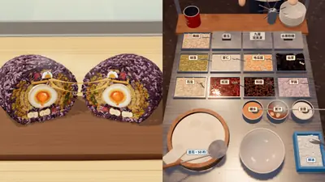
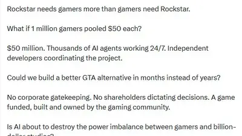

Bernadette
@insolentpheasant.bsky.social
· 11/27 04:59· 命中「Anthropic」
We don't want your shares. We want your taxes.

生活2026.11.27 生活2026.11.25
生活2026.11.25
Social Lab（OpView 社群口碑資料庫）每週彙整各平台熱門事件。榜上的數據以圖表呈現， 這裡列出每週彙整的標題與觀測期間，點進去看完整排行。
 PTT
PTT
 Facebook
Facebook
 Dcard
Dcard
 Instagram
Instagram
 Mobile01
Mobile01
 Facebook 意見領袖
Facebook 意見領袖
 Instagram 意見領袖
Instagram 意見領袖
 YouTube 意見領袖
YouTube 意見領袖
Social Lab 依社群聲量統計的各平台人氣意見領袖前三名。
Bluesky 的全站熱門話題，以英語圈的娛樂、體育、政治為主，僅供參考。
以 30 小時內、依讚數與轉發數排序，已過濾掉 AI 繪圖標籤與明顯洗版內容。
We don't want your shares. We want your taxes.
youtube.com/watch?v=i30j.... ARTIFICIAL INTELLIGENCE EXPERT SAYS THAT A. I. COULD KILL ALL HUMANS BY 2030 !
I think it is unethical to work for OpenAI and have a courtesy appointment at Stanford and then not mention that OpenAI is the one that is paying you when you post a paper to the arXiv Happy Turkey Day 🦃
concept for a more egalitarian corporation: - AI swarm C-suite (customized open weights) with on-prem inference - Every human employee in a union with majority ownership stake - Union sets prompts for the LLM C-suite swarm all I'm saying is, if we're going to automate everyone, why not them first?
I think, very ironically, the main problem with LLM software is *attention*; your most valuable commodity in any project is people paying attention to the thing and feeding the results of that attention back into the project, and LLMs make it easy for humans to stop paying attentions so results suck
Joined the Tech Report to talk about how Jensen Huang’s return to Nvidia has painted a target on the CEO’s back, and how Anthropic’s IPO a week on has failed to reignite enthusiasm in the AI industry - and potentially doomed OpenAI. www.youtube.com/watch?v=eSBT...
imagining one million Claude instances all trying to make the boobs of the protagonist bigger and her face younger at the same time

My father is the pettiest motherfucker ever. Client asked him for a LLM application. Man spent 10k on the hardware for LLMs to prove that it can’t do shit, then made the client pay him DOUBLE for the labor.
Oh good another article from Groundbreaker that's near-entirely written by Claude and makes a bunch of assumptions that, while interesting, are genuinely painful to parse! I will also say calling these long-dated leases "credit swaps" is nonsense to me www.groundbrkr.com/p/mark-to-sw...
Ah, I see the Leonida airport switched to the LLM routing system.
> new anti-ai article is reposted onto my timeline > asks the poster if the article written by a human or an LLM > they don't understand > pull out illustrated diagram explaining human vs LLM writing > they laugh and say "it's a good article sir" > read the article > it's claude
I cannot believe @thebookseller.com got a statement from the agent and didn't trouble to ask about them hanging their author out to dry in the press. Like "why did you leak this to Publisher's Lunch" would have been a good question for an actual journalist to ask.
By the end of this piece you will know what the evidence shows, what the law demands, and the questions I would put to Nvidia under oath. www.uncensoredobjection.com/p/nvidia-ai-...
Correct. And this is also what's happening to all tech in Silicon Valley because of the AI driven layoffs. They're firing experts and keeping mid-salaried mid-coders armed with Claude. Lol. Don't expect shit to get better anytime soon.
I think LLM writing tends to be very bad and continues to get worse: * no sense of linear sequencing * no sense of rhythm, negative space, catching a breath * no forbearance; all special moves, no punches and kicks, as my partner puts it Write well, and the resulting text is very obviously not LLM
You'd think that after all the GPT 4o issues, LLM devs would know that they should aggressively avoid these types of parasocial interactions. But hey, it's Facebook, I guess I shouldn't be surprised that they value engagement and retention above the mental health of their users.